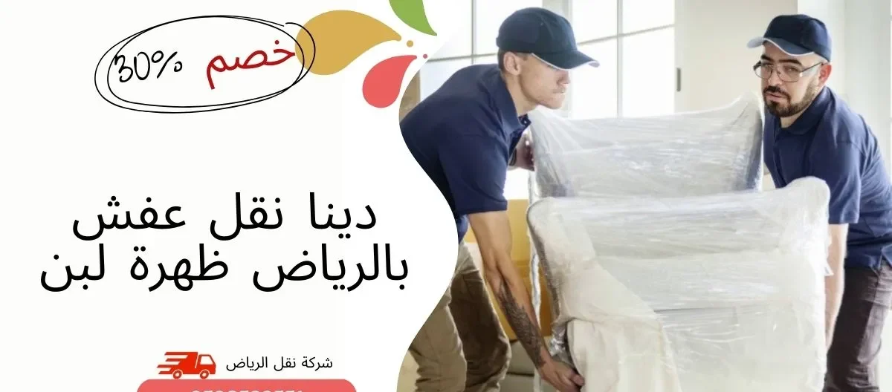

دينا نقل عفش بالرياض ظهرة لبن 0541145506

توفر شركة نقل الرياض مجموعة شاملة ومتنوعة من الخدمات التي تلبي احتياجات العملاء في مختلف الأحياء، فلكل من يرغب في الحصول على شركة موثوقة لنقل عفشك فإن شركة نقل الرياض هي الخيار الأمثل، وهذا لكي تضمن لك تجربة نقل مريحة وسلسة، وهذا من خلال خبرتها الطويلة في هذا المجال، وتقدم الشركة خدمات متخصصة حول دينا نقل عفش بالرياض ظهرة لبن متكاملة تشمل التعبئة والنقل والتخزين مما يجعلها تبرز بين المنافسين، وفي هذا المقال سوف تتعرف على العديد من الخدمات التي تقدمها الشركة في أحياء مختلفة، ومع تسليط الضوء على أهمية اختيار خدمة نقل عفش محترفة.
دينا نقل عفش حي السويدي
تقدم شركة نقل الرياض وهي من افضل شركات نقل الاثاث في السعودية خدمات متكاملة لنقل العفش في حي السويدي، حيث يتمتع الفريق بخبرة واسعة في التعامل مع مختلف أنواع الأثاث، وتشمل خدماتها:
تعبئة العفش
استخدام مواد تعبئة عالية الجودة مثل الفقاعات البلاستيكية والصناديق المخصصة، لضمان حماية العفش من أي خدوش أو أضرار أثناء النقل، ويتم تطبيق أسلوب تعبئة احترافي يضمن عدم تعرض الأغراض للتلف.
نقل آمن
يعتمد فريق العمل على تقنيات حديثة في التحميل والنقل مما يضمن وصول العفش إلى وجهته بأمان، كما يتم استخدام شاحنات مجهزة بشكل جيد مع أنظمة تعليق خاصة لحماية الأثاث أثناء القيادة.
تفكيك وإعادة تركيب
توفير خدمة تفكيك القطع الكبيرة مثل الأسرّة والخزائن مع إعادة تركيبها في المكان الجديد بدقة واحترافية، ويضمن الفريق أن كل قطعة عائدة إلى حالتها الأصلية بعد النقل.
مراقبة النقل
استخدام نظام تتبع لضمان أن العميل يمكنه متابعة عملية النقل في أي وقت، ويتم تزويد العملاء بتحديثات حية حول موقع الشاحنة.
التعامل مع الأثاث الثمين
خبرة في نقل الأثاث الثمين أو الهش مثل البيانو أو القطع الفنية مما يضمن سلامتها، ويتم استخدام تقنيات خاصة لتأمين هذه القطع خلال النقل، وإن اختيار دينا نقل عفش بالرياض ظهرة لبن يجعلك مطمئنًا لسلامة عفشك أثناء النقل.
دينا نقل عفش حي المهدية
في حي المهدية تبرز شركة نقل الرياض كخيار مثالي لنقل العفش، حيث تقدم خدمات متنوعة تشمل:
خدمات التخزين
توفير أماكن تخزين آمنة ومراقبة بعناية مما يتيح لك تخزين العفش في حال الحاجة لذلك، ويتمتع العملاء بإمكانية الوصول إلى أماكن التخزين في أي وقت مع توفير نظام أمان متكامل.
نقل سريع
الالتزام بمواعيد التسليم الدقيقة، حيث يتم جدولة عمليات النقل بشكل يتناسب مع احتياجات العميل، وتسعى الشركة إلى تحقيق أعلى مستويات الكفاءة في خدمات النقل.
فريق مدرب
عمالة مدربة على أعلى مستوى للتعامل مع جميع أنواع الأثاث مما يضمن عدم تعرض العفش لأي أضرار، ويتم تدريب الفريق على تقنيات النقل الصحيحة وفنون التعامل مع العملاء.
خدمات النقل الخاصة
توفير شاحنات مجهزة خصيصًا لنقل الأثاث مع إمكانية تخصيص الشاحنة حسب حجم العفش، وتشمل الشاحنات معدات مثل الأشرطة والأدوات اللازمة لتفكيك الأثاث.
استشارات ما قبل النقل
تقديم نصائح مجانية حول كيفية التحضير لعملية النقل بما في ذلك كيفية تعبئة الأغراض بشكل فعال، وتساعد هذه الاستشارات العملاء في تنظيم عملية الانتقال بشكل أفضل.
تعد دينا نقل عفش بالرياض ظهرة لبن مثالًا على الخدمات المتكاملة التي تقدمها الشركة.
افضل شركة نقل عفش بالرياض
مما لا شك فيه أن شركة نقل الرياض تعتبر من أفضل شركات نقل العفش في الرياض، وتتميز الشركة بالعديد من المميزات:
- خدمة عملاء ممتازة: دعم فني متواصل عبر الهاتف أو الإنترنت للرد على استفسارات العملاء وتقديم المساعدة، وتتميز الشركة بسرعة الاستجابة وتوفير حلول فورية لأي مشكلات قد تواجه العملاء.
- أسعار تنافسية: تقديم خدمات بجودة عالية بأسعار معقولة مع توفير عروض خاصة للعملاء الجدد، وتحرص الشركة على تقديم قيمة مضافة من خلال خدماتها، مما يجعلها خيارًا مثاليًا للجميع.
- تجارب عملاء إيجابية: شهادات من عملاء سابقين تؤكد كفاءة الشركة مما يمنح الثقة للعملاء الجدد، ويمكن للعملاء الاطلاع على تقييمات وتجارب سابقة من خلال الموقع الإلكتروني للشركة.
- التأمين على المنقولات: توفير خيارات تأمين متعددة لحماية العفش أثناء النقل مما يضمن راحة البال للعميل، وهذا يجعل العملاء يشعرون بالاطمئنان عند استخدام خدمات النقل.
- تسهيلات الدفع: خيارات دفع مرنة تشمل الدفع نقدًا أو عبر بطاقات الائتمان لتسهيل عملية الدفع على العملاء، وبالإضافة إلى ذلك، يمكن للعملاء اختيار خطط تقسيط مريحة.
عندما تبحث عن دينا نقل عفش بالرياض ظهرة لبن تأكد أنك تختار الأفضل.
دينا نقل عفش بالرياض ظهرة لبن
تقدم شركة نقل الرياض في حي ظهرة لبن خدمات استثنائية لنقل العفش وكذلك نقل اثاث حي الجنادريه الرياض، حيث تتميز هذه الخدمات بكفاءة عالية وسرعة في الأداء مما يجعلها الخيار الأمثل لكل من يرغب في الانتقال بسهولة، وتشمل الخدمات:
- استخدام تقنيات حديثة لحماية العفش بما في ذلك استخدام الأغطية القابلة للغسل والمقاومة للماء، ويضمن ذلك أن العفش سيكون محميًا من العوامل الخارجية.
- أسطول من الشاحنات الحديثة والمجهزة بمعدات النقل اللازمة لضمان نقل العفش بكفاءة، ويتم اختيار الشاحنات بناءً على حجم العفش ونوعه، مما يضمن تجربة نقل سلسة.
- ضمان حماية العفش أثناء النقل من خلال خيارات تأمين متنوعة مما يعزز ثقة العملاء، كما يمكن للعملاء اختيار مستوى التأمين الذي يناسبهم.
- قدرة الشركة على التعامل مع المواقف الطارئة أو الطلبات العاجلة، وتعمل الشركة على تلبية احتياجات العملاء بسرعة وكفاءة.
- إمكانية نقل المكاتب والمرافق التجارية مع ضمان الحد الأدنى من الانقطاع في العمل، وتوفر الشركة خططًا مخصصة للانتقال التجاري مما يسهل عملية الانتقال.
باختيارك دينا نقل عفش بالرياض ظهرة لبن تضمن لنفسك تجربة نقل خالية من المتاعب.
خدمات شركة نقل الرياض بظهرة لبن
تقدم شركة نقل الرياض مجموعة شاملة من الخدمات في منطقة ظهرة لبن وايضا نقل عفش من مكة الي الرياض، وتشمل هذه الخدمات:
- استشارات مجانية: تقديم نصائح حول كيفية تنظيم عملية النقل بأفضل صورة ممكنة بما في ذلك كيفية اختيار المواد المناسبة للتعبئة، حيث تسهم هذه الاستشارات في تسهيل عملية الانتقال وتقليل التوتر.
- تنظيف ما بعد النقل: خدمات تنظيف للمكان الجديد بعد النقل مما يضمن لك بيئة نظيفة ومرتبة فور الوصول، ويتضمن ذلك إزالة أي بقايا من عملية النقل وترتيب المساحات.
- مرونة في المواعيد: القدرة على تخصيص مواعيد النقل بما يتناسب مع جدول العميل سواء كان ذلك في الصباح الباكر أو في وقت متأخر من اليوم، وتوفر الشركة خيارات مرنة لتناسب جميع العملاء.
- التعامل مع الأثاث الضخم: قدرة على نقل القطع الكبيرة مثل الأرائك والكراسي مع توفير أدوات خاصة لتسهيل هذه العملية، ويتم تدريب الفريق على كيفية التعامل مع هذه القطع بشكل آمن وفعال.
- خدمات إضافية: إمكانية توفير خدمات أخرى بجانب خدمات دينا نقل عفش بالرياض ظهرة لبن مثل الكهرباء أو الطلاء في المنزل الجديد مما يجعل عملية الانتقال أكثر سهولة، ويمكن للعملاء طلب هذه الخدمات كجزء من حزمة النقل، وتضمن لك الشركة تجربة نقل مثالية في ظهرة لبن.
نقل عفش ظهرة لبن
تعد منطقة ظهرة لبن إحدى المناطق السكنية البارزة في مدينة الرياض، وتتميز بتنوع سكانها والتوسع العمراني الكبير فيها. ومع زيادة عدد السكان واحتياجاتهم اليومية، أصبح دينا نقل عفش بالرياض ظهرة لبن من الخدمات المطلوبة بشكل كبير، نظرًا لحاجة الكثيرين إلى التنقل بين المنازل أو تجهيز منازل جديدة.
أهمية خدمات نقل العفش في ظهرة لبن
خدمات نقل العفش ليست مجرد نقل أمتعة من مكان لآخر، بل هي عملية تحتاج إلى تخطيط وتنفيذ دقيق لضمان سلامة الممتلكات. في دينا نقل عفش بالرياض ظهرة لبن تبرز الحاجة إلى هذه الخدمات بسبب:
- التوسع العمراني: مع ازدياد عدد المشاريع السكنية، يزداد الطلب على خدمات دينا نقل عفش بالرياض ظهرة لبن.
- التنقل المستمر: انتقال العائلات إلى مساكن جديدة يحتاج إلى شركة نقل عفش موثوقة لضمان نقل الأثاث بأمان.
- التعامل مع الأثاث الثقيل: تحتاج الأسر إلى فرق عمل مدربة لنقل الأثاث الكبير والمعقد، مثل الدواليب والأسرة.
خطوات نقل العفش في ظهرة لبن
تشمل خدمات نقل العفش في ظهرة لبن عدة خطوات رئيسية تضمن تنفيذ العملية بشكل احترافي:
- التغليف: يتم تغليف الأثاث باستخدام مواد حماية متينة لتجنب تعرضه للخدوش أو التلف أثناء النقل.
- الفك والتركيب: يتم فك قطع الأثاث الكبيرة مثل الدواليب والأسرة لتسهيل نقلها، ثم تركيبها في الوجهة الجديدة.
- النقل الآمن: يتم تحميل الأثاث في شاحنات مجهزة ومناسبة لضمان وصوله بأمان.
- التفريغ والترتيب: بعد الوصول، يتم تفريغ الأثاث وترتيبه حسب رغبة العميل.
معايير اختيار شركة نقل عفش في ظهرة لبن
إذا كنت تبحث عن شركة موثوقة دينا نقل عفش بالرياض ظهرة لبن، فمن المهم مراعاة النقاط التالية:
- الخبرة: اختر شركة تمتلك خبرة طويلة في هذا المجال فهي افضل شركة نقل عفش بالرياض عمالة فلبينية.
- السمعة: تحقق من آراء العملاء السابقين للتأكد من جودة الخدمة.
- الأسعار: اختر شركة تقدم خدمات بأسعار تنافسية دون التأثير على الجودة.
- التجهيزات: يجب أن تمتلك الشركة معدات حديثة وشاحنات مجهزة.
شركة نقل الرياض في ظهرة لبن
تعد شركة “نقل الرياض” واحدة من الشركات الرائدة في تقديم خدمات نقل
العفش في منطقة ظهرة لبن. تقدم الشركة خدماتها بمستوى عالٍ من الجودة والكفاءة، مما يجعلها الخيار الأول
للسكان في هذه المنطقة.
أهم ما يميز شركة نقل الرياض كدينا نقل عفش بالرياض ظهرة لبن:
- استخدام أدوات تغليف حديثة لضمان حماية الأثاث.
- فريق عمل مدرب على فك وتركيب الأثاث بدقة.
- توفير شاحنات مجهزة لنقل الأثاث بأمان.
- الالتزام بالمواعيد والحرص على رضا العملاء.
الأسئلة الشائعة حول دينا نقل عفش بالرياض ظهرة لبن
ما هي تكلفة نقل العفش مع شركة نقل الرياض؟
تختلف التكلفة حسب حجم العفش والمسافة، لذا يُفضل التواصل مع الشركة للحصول على عرض سعر دقيق بناءً على احتياجاتك الخاصة.
هل توفر الشركة خدمات التعبئة والتغليف؟
نعم شركة نقل الرياض توفر خدمات تعبئة وتغليف احترافية بما في ذلك مواد تعبئة مخصصة لحماية العفش.
كيف يمكنني حجز خدمة النقل؟
يمكنك حجز الخدمة عبر الاتصال بالشركة مباشرة أو عبر موقعها الإلكتروني الذي يقدم خيارات سهلة وسريعة للحجز.
هل يوجد تأمين على العفش أثناء النقل؟
نعم تقدم شركة نقل الرياض خيارات تأمين على العفش لضمان سلامته أثناء النقل مما يمنح العملاء راحة البال.